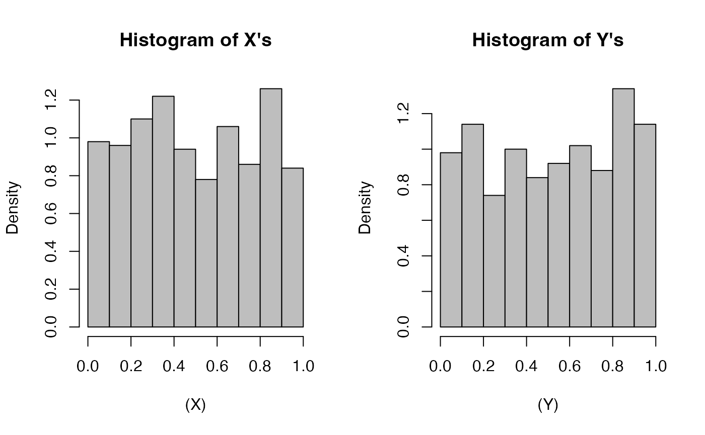

In this vignette we outline the theory for equivalence testing of two
cumulative distribution functions using trimmed Mallows distance
proposed by Munk and Czado (1998), and
demonstrate how to conduct the test using the
mallow_equiv_test function.
Mallows Distance Equivalence Test Theory
Say \(X_i \overset{iid}{\sim} F\) for \(i = 1, ..., n\) and \(Y_j \overset{iid}{\sim} G\) for \(j = 1, ..., m\) where \(F\) and \(G\) are continuous distribution functions. Let \(\hat{F}_n(x) = \frac{1}{n}\sum_{i=1}^n \boldsymbol{1}\{X_i \leq x\}\) denote the empirical cumulative distribution function (ECDF) of \(X\), and \(\hat{F}^{-1}_n(t) = \inf\{x : F_n(x) \geq t\}\) denote the quantile function. Define \(\hat{G}_m(y)\) and \(\hat{G}^{-1}_m(t)\) similarly for \(Y\).
The \(p^{\text{th}}\) Mallow’s distance (Mallows 1972) is (also the Wasserstein distance in the case of CDFs): \[\begin{equation} \Psi_p (F, G) = \left[ \int_0^1 | F^{-1}(u) - G^{-1}(u) | ^p du \right]^{1/p}. \end{equation}\]
The Trimmed \(p^{th}\) Mallows distance with trimming parameter \(\alpha \in [0, 1/2)\) is :
\[\begin{equation} \Psi_{\alpha, p}(F, G) = \frac{1}{1-2\alpha} \left[ \int_{\alpha}^{1-\alpha} | F^{-1}(u) - G^{-1}(u) | ^p du \right]^{1/p}. \end{equation}\]
Munk and Czado (1998) conduct the equivalence test for some suitable \(0<\Delta_0\in \mathbb{R}\): \[\begin{equation} H_0: \Psi_{\alpha, 2}(F, G) \geq \Delta_0 \quad \text{versus} \quad H_A: \Psi_{\alpha, 2}(F, G) < \Delta_0 \end{equation}\]
Assume \(\{\alpha_{n \wedge m}\}_{n,m \in \mathbb{N}}\) be a sequence of trimming bounds satisfying the regularity conditions in Munk and Czado (1998). Let \(n\wedge m \to \infty\) such that \(n / (n + m) \to \lambda \in (0,1)\). If \(\Psi_{\alpha, 2}(F,G) < \infty\) then,
\[\begin{equation} \left(\frac{nm}{n+m}\right)^{1/2} \Big[\Psi^2_{\alpha_{n \wedge m}, 2}(\hat{F}_n, \hat{G}_n) - \Psi^2_{\alpha, 2}(F, G) \Big] \overset{d}{\to} N(0, \sigma^2_{\alpha}(F, G)) \end{equation}\] where
\[\begin{align} \sigma^2_{\alpha}(F, G) &= \frac{4}{(1-2\alpha)^4} \left[ \lambda \sigma^2_{\alpha}(F|G)+ (1-\lambda)\sigma^2_{\alpha}(G|F) \right] \\ \sigma^2_{\alpha}(F|G) &= T_{\alpha}^{**}(F, G) - [T_{\alpha}^{*}(F,G)]^2 \label{eqn:Sigma2FG}\\ T_{\alpha}^{**}(F, G) &= \int_0^{1-\alpha} \Bigg[ \int_{\alpha \vee s}^{1-\alpha} h_{F|G}(t) dt \Bigg]^2 ds \label{eqn:Sigma2T2}\\ T_{\alpha}^{*}(F, G) &= \int_0^{1-\alpha} \Bigg[ \int_{\alpha \vee s}^{1-\alpha} h_{F|G}(t) dt \Bigg] ds \label{eqn:Sigma2T1} \\ h_{F|G}(t) &= \frac{F^{-1}(t) - G^{-1}(t) }{ f \circ F^{-1}(t)}. \end{align}\] and \(\sigma^2_{\alpha}(G|F)\) is the same as \(\sigma^2_{\alpha}(F|G)\) with the roles of \(F\) and \(G\) reversed. See Munk and Czado (1998) for the full list of regularity conditions.
Then, a consistent level \(\alpha^*\) test for this hypothesis rejects \(H_0\) if, \[\begin{equation} \left(\frac{nm}{n+m}\right)^{1/2} \frac{\Psi^2_{\alpha_{n \wedge m}, 2}(\hat{F}_n, \hat{G}_n) - \Delta_0^2}{\hat{\sigma}_{\alpha}(F, G)} \leq q_{\alpha^*} \end{equation}\] where \(q_{\alpha^*}\) is the \(\alpha^*\) quantile of the standard normal distribution and \(\hat{\sigma}_{\alpha}\) is a consistent estimator of \(\sigma_{\alpha}\).
Let \(x_{(i)}\) be the \(i^{\text{th}}\) order statistic of the sample \(X\). Define \(y_{(i)}\) similarly. In the case of \(n=m\), \(\hat{\sigma}_{\alpha}\) is calculated using:
\[\begin{align} T_{\alpha}^{*}(\hat{F}_n, \hat{G}_n) &= \alpha \left[ \frac{1}{2} \left( x_{(n-a)}^2 - x_{(a)}^2 \right) - \sum_{i=a}^{n-a-1} y_{(i)} (x_{(i+1)} - x_{(i)}) \right] \nonumber\\ &\quad + \frac{1 - 2\alpha}{2}x_{(n-a)}^2 - \frac{1}{2n} \sum_{i=a+1}^{n-a}x_{(i)}^2 - \frac{1}{n}\sum_{j=a+1}^{n-a}\sum_{i=j}^{n-a-1} y_{(i)} (x_{(i+1)} - x_{(i)}) \\ T_{\alpha}^{**}(\hat{F}, \hat{G}) &= \alpha \left[ \frac{1}{2} \left( x_{(n-a)}^2 - x_{(a)}^2 \right) - \sum_{i=a}^{n-a-1} y_{(i)} (x_{(i+1)} - x_{(i)}) \right]^2 \nonumber \\ & \quad +\frac{1}{4n}\sum_{i=a+1}^{n-a} (x_{(n-a)}^2 - x_{(i)}^2)^2 - \frac{1}{n}\sum_{j=a+1}^{n-a-1} \left[ \left(x_{(n-a)} ^2 - x_{(i)}^2 \right) \sum_{i=j}^{n-a-1} y_{(i)} (x_{(i+1)} - x_{(i)}) \right] \nonumber \\ &\quad + \frac{1}{n} \sum_{j=a+1}^{n-a-1} \sum_{i=j}^{n-a-1} y_{(i)} (x_{(i+1)} - x_{(i)}) \end{align}\]
where \(a\) is an integer such that \(\alpha = a/n\).
Note in the case of \(\sigma_{\alpha}(F,G) = 0\) we have a degenerate limit: \[\begin{equation} \left(\frac{nm}{n+m}\right)^{1/2} \Big[\Psi^2_{\alpha_{n \wedge m}, 2}(\hat{F}_n, \hat{G}_n) - \Psi^2_{\alpha, 2}(F, G) \Big] \overset{p}{\to} 0 \end{equation}\] The authors find that even in this case, this test remains consistent for a sequence of hypothesis \(H_{n,m} :\Psi_{\alpha, 2}(F, G) \geq \Delta_{0,n,m}\), as long as \(\Delta_0^{-1} = o(\sqrt{n \vee m})\). This implies we can assess the similarly of \(F\) and \(G\) as long as the test approaches \(\Psi_{\alpha, 2}(F, G)\to0\) at a slower rate that \(1/\sqrt{n}\). This can particularly useful in the large sample case, but may be impractical with small sample sizes.
Using mallow_equiv_test
For the remainder of this vignette, we only consider the case when \(n=m\).
Let’s construct an example where two distributions on [0, 1] should be somewhat similar. For \(i=1,...,500\), let \(X_i \overset{iid}{\sim} F\) and \(Y_i\overset{iid}{\sim} F\) where F is \(\text{Uniform}(0,1)\) and \(\text{TruncNormal}(\mu = 0.5, \sigma^2 = 25, a = 0, b=1)\). \(\text{TruncNormal}(\mu, \sigma^2, a = 0, b=1)\) is the truncated normal distribution with mean \(\mu\), variance \(\sigma^2\), minimum \(a\) and maximum \(b\). The pdf of \(TruncNormal}(\mu = 0.5, \sigma^2 = 25, a = 0, b=1)\) is quite “flat” on the interval [0, 1].
We can look at the histogram of the samples below and see that they look fairly similar.
set.seed(2935)
X <- runif(500)
Y <- truncnorm::rtruncnorm(500, a = 0, b = 1, mean = 1/2, sd = 5)
par(mfrow = c(1, 2))
hist((X), col = "gray", xlim = c(0,1), main = "Histogram of X's", freq = F)
hist((Y), col = "gray", xlim = c(0,1), main = "Histogram of Y's", freq = F)
We can also consider their ECDFs and see that they look fairly similar.
Say we wish to construct the equivalence test with a tolerance value \(\Delta_0 =0.8\), trimming parameter \(\alpha = 0.5\), and level \(\alpha^*=0.05\).
\[H_0: \Psi_{\alpha, 2}(F, G) \geq 0.8
\quad \text{versus} \quad H_A: \Psi_{\alpha, 2}(F, G) < 0.8
\] We can use the mallow_equiv_test function as
follows:
test.result <- mallows_equiv_test(X, Y, alpha = 0.05, delta0 = 0.8)
test.result
#> $dist.hat
#> [1] 0.03781523
#>
#> $sd.hat
#> [1] 0.9830526
#>
#> $test.stat
#> [1] -10.27074
#>
#> $pval
#> [1] 4.773456e-25
#>
#> $test.result
#> [1] "REJECT NULL"
#>
#> $ci
#> [1] 0.0000000 0.1036966
#>
#> $alpha
#> [1] 0.05
#>
#> $delta0
#> [1] 0.8We can see from the output above, this test has a p-value of 0 which is less than our significance level, 0.05, so we reject \(H_0\) and claim that \(F\) and \(G\) are equivalent. Similarly, \(\Delta_0=0.8\) is not in the upper \(1-\alpha^* = 0.95\) confidence interval of (0, 0.1037).
Say instead we wish to test the same hypothesis but with the much more conservative parameters of tolerance value \(\Delta_0 =0.004\) and level \(\alpha^*=0.1\) (we keep \(\alpha=0.05\)). The p-value of this test is 0.5090 so we fail to reject the null hypothesis and cannot claim equivalence of \(F\) and \(G\).
test.result2 <- mallows_equiv_test(X, Y, alpha = 0.05, delta0 = 0.004, sig.level = 0.01)
test.result2
#> $dist.hat
#> [1] 0.03781523
#>
#> $sd.hat
#> [1] 0.9830526
#>
#> $test.stat
#> [1] 0.0227426
#>
#> $pval
#> [1] 0.5090722
#>
#> $test.result
#> [1] "FAIL TO REJECT NULL"
#>
#> $ci
#> [1] 0.0000000 0.1460677
#>
#> $alpha
#> [1] 0.05
#>
#> $delta0
#> [1] 0.004